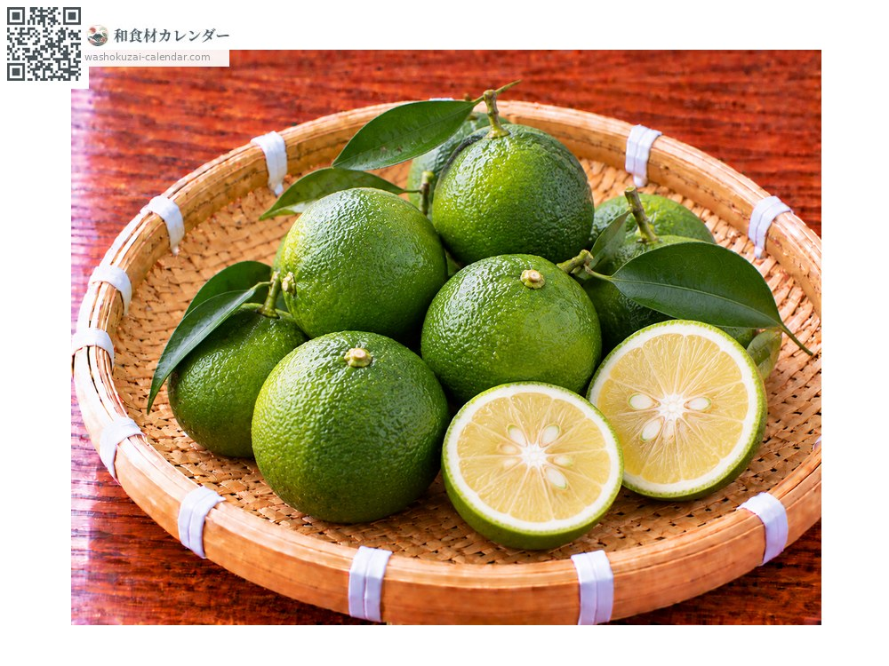
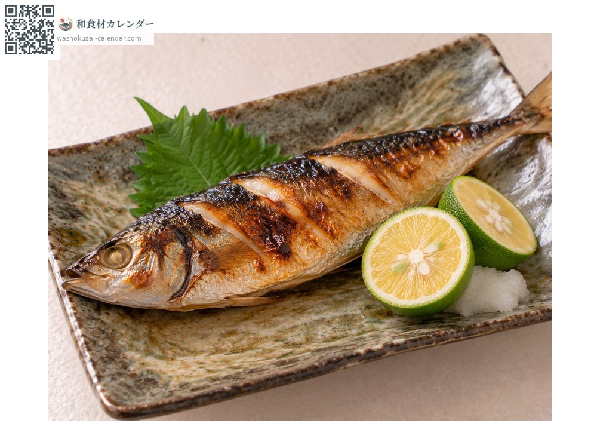
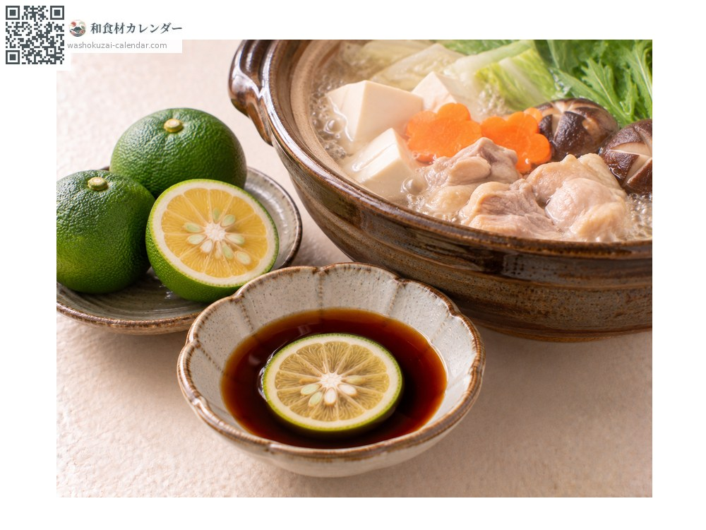
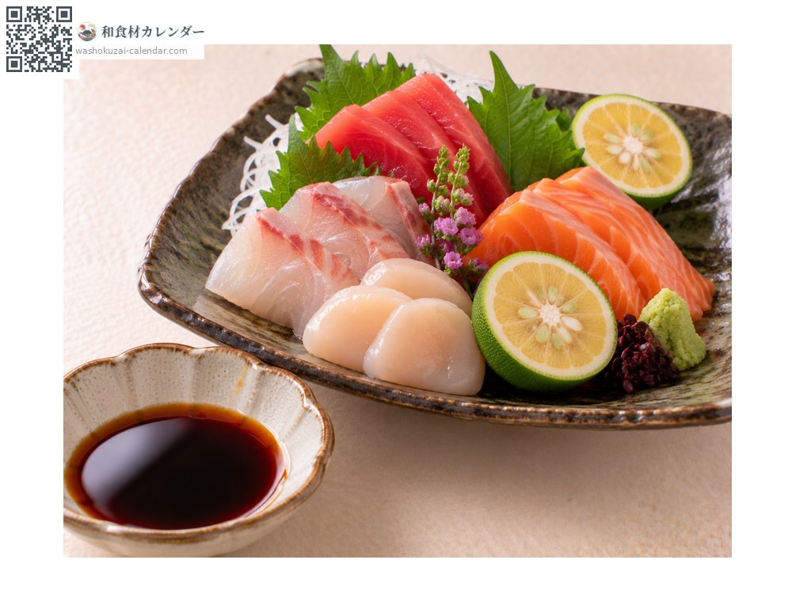
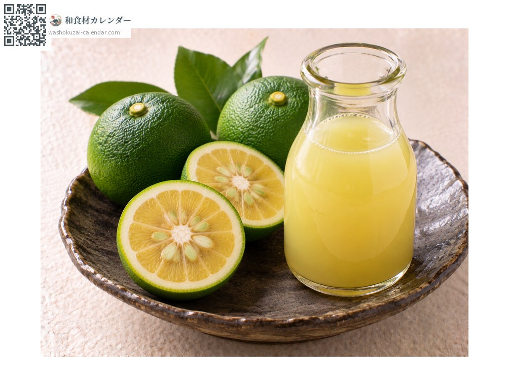

水果
香母酢（臭橙）
かぼす かぼす kabosu
别名kabosu
应季时期为8月、9月

应季时期
1月
2月
3月
4月
5月
6月
7月
8月
9月
10月
11月
12月
应季有供应
烹饪方法

挤在烤鱼上
挤出果汁，与香鱼和鳢鱼特别相配。

用于火锅
挤进橙醋里，清爽的香气会散发出来。

配生鱼片
挤进酱油里，能切开鱼的油脂。

果汁
榨出保存，也能冷冻。
挑选方法
表皮深绿有光泽、拿起来沉。没有损伤。
保存方法
装袋冷藏。榨成果汁冷冻起来很方便。
主要产地
小知识
全国产量九成以上来自大分县。比酸橘大上一号，果汁也更多。酸橘是德岛的特产，香母酢则是代表大分的香酸柑橘。在转黄成熟之前，以绿色的状态出货。